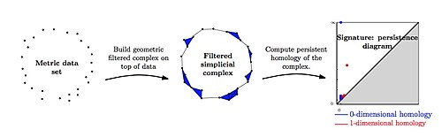

Análisis de datos topológicos
En matemáticas aplicadas, el análisis topológico de los datos (en inglés: topological data analysis) (TDA) es un enfoque el análisis de conjuntos de datos que utiliza técnicas de topología. La extracción de información de conjuntos de datos de alta dimensión, incompletos y ruidosos suele ser un desafío, sin embargo, el análisis topológico de los datos proporciona un marco general para analizar dichos datos de una manera que no es sensible a la métrica particular elegida y proporciona reducción de dimensionalidad y robustez al ruido. Más allá de esto, hereda la funtorialidad, un concepto fundamental de las matemáticas modernas, de su naturaleza topológica, lo que le permite adaptarse a nuevas herramientas matemáticas.
La motivación inicial del análisis topológico de los datos es estudiar la forma de los datos es combinar la topología algebraica y otras herramientas de las matemáticas puras para permitir un estudio matemáticamente riguroso de la "forma". La herramienta principal es la homología persistente, una adaptación de la homología a los datos de la nube de puntos. La homología persistente se ha aplicado a muchos tipos de datos en muchos campos. Además, su fundamento matemático también tiene importancia teórica. Las características únicas del análisis topológico de los datos lo convierten en un puente prometedor entre la topología y la geometría.
Teoría básica
[editar]Intuición
[editar]TDA se basa en la idea de que la forma de los conjuntos de datos contiene información relevante. Los datos reales de alta dimensión suelen ser escasos y tienden a tener características relevantes de baja dimensión. Una tarea del TDA es proporcionar una caracterización precisa de este hecho. Por ejemplo, la trayectoria de un sistema simple depredador-presa regido por las ecuaciones de Lotka-Volterra [1] forma un círculo cerrado en el espacio de estados. TDA proporciona herramientas para detectar y cuantificar dicho movimiento recurrente. [2]
Muchos algoritmos para el análisis de datos, incluidos los utilizados en TDA, requieren la configuración de varios parámetros. Sin un conocimiento previo del dominio, es difícil elegir la recopilación correcta de parámetros para un conjunto de datos. La idea principal de la homología persistente es utilizar la información obtenida de todos los valores de los parámetros codificando esta enorme cantidad de información en una forma comprensible y fácil de representar. Con TDA, existe una interpretación matemática cuando la información es un grupo de homología. En general, se supone que las características que persisten para una amplia gama de parámetros son características "verdaderas". Se supone que las características que persisten solo para un rango estrecho de parámetros son ruido, aunque la justificación teórica para esto no está clara. [3]
Historia temprana
[editar]Los precursores del concepto completo de homología persistente aparecieron gradualmente con el tiempo. [4] En 1990, Patrizio Frosini introdujo una pseudodistancia entre subvariedades, y posteriormente la función de tamaño, que en curvas 1-dim es equivalente a la homología persistente 0. [5] [6] Casi una década después, Vanessa Robins estudió las imágenes de homomorfismos inducidos por inclusión. Finalmente, poco después, Herbert Edelsbrunner et al. introdujeron el concepto de homología persistente junto con un algoritmo eficiente y su visualización como un diagrama de persistencia. [7] Gunnar Carlsson et al. reformularon la definición inicial y dieron un método de visualización equivalente llamado códigos de barras de persistencia, [8] interpretando la persistencia en el lenguaje del álgebra conmutativa. [9]
En topología algebraica, la homología persistente surgió a través del trabajo de Sergey Barannikov sobre la teoría de Morse. El conjunto de valores críticos de la función Morse suave se dividió canónicamente en pares "nacimiento-muerte", los complejos filtrados se clasificaron, sus invariantes, equivalentes al diagrama de persistencia y los códigos de barras de persistencia, junto con el algoritmo eficiente para su cálculo, fueron descritos bajo el nombre de formas canónicas en 1994 por Barannikov. [10] [11]
Conceptos
[editar]A continuación se presentan algunos conceptos ampliamente utilizados. Tenga en cuenta que algunas definiciones pueden variar de un autor a otro.
Una nube de puntos a menudo se define como un conjunto finito de puntos en algún espacio euclidiano, pero puede considerarse cualquier espacio métrico finito.
El complejo de Čech de una nube de puntos es el nervio de la cubierta de bolas de un radio fijo alrededor de cada punto de la nube.
Un módulo de persistencia indexado por es un espacio vectorial Para cada uno , y un mapa lineal cuando sea , de tal manera que a pesar de y cuando sea [12] Una definición equivalente es un funtor de considerado como un conjunto parcialmente ordenado en la categoría de espacios vectoriales.
El grupo de homología persistente de una nube de puntos es el módulo de persistencia definido como , dónde es el complejo de Čech de radio de la nube de puntos y es el grupo de homología.
Un código de barras de persistencia es un conjunto múltiple de intervalos en , y un diagrama de persistencia es un conjunto múltiple de puntos en ().
La distancia de Wasserstein entre dos diagramas de persistencia y se define como dónde y rangos sobre biyecciones entre y . Consulte la figura 3.1 en Munch para obtener una ilustración.
La distancia de cuello de botella entre y es Este es un caso especial de la distancia de Wasserstein, siendo .
Propiedad básica
[editar]Teorema de estructura
[editar]El primer teorema de clasificación para homología persistente apareció en 1994 [10] a través de las formas canónicas de Barannikov. El teorema de clasificación que interpreta la persistencia en el lenguaje del álgebra conmutativa apareció en 2005: [9] para un módulo de persistencia generado finitamente con campo coeficientes, Intuitivamente, las partes libres corresponden a los generadores de homología que aparecen a nivel de filtración. y nunca desaparecen, mientras que las partes de torsión corresponden a las que aparecen a nivel de filtración. y por último pasos de la filtración (o equivalentemente, desaparecen en el nivel de filtración) ). [10]
La homología persistente se visualiza a través de un código de barras o un diagrama de persistencia. El código de barras tiene su raíz en las matemáticas abstractas. Es decir, la categoría de complejos filtrados finitos sobre un campo es semi-simple. Cualquier complejo filtrado es isomorfo a su forma canónica, una suma directa de complejos filtrados simples unidimensionales y bidimensionales.
Estabilidad
[editar]La estabilidad es deseable porque proporciona robustez frente al ruido. Si es cualquier espacio que es homeomorfo a un complejo simplicial, y son funciones continuas domesticadas,[13] entonces los espacios vectoriales de persistencia y se presentan de forma finita y , dónde se refiere a la distancia del cuello de botella [14] y ¿El mapa lleva una función domesticada continua al diagrama de persistencia de su -ésima homología.
Flujo de trabajo
[editar]El flujo de trabajo básico en TDA es: [15]
| nube de puntos | complejos anidados | módulo de persistencia | código de barras o diagrama |
- Si es una nube de puntos, reemplace con una familia anidada de complejos simpliciales (como el complejo Čech o Vietoris-Rips). Este proceso convierte la nube de puntos en una filtración de complejos simples. Tomando la homología de cada complejo en esta filtración se obtiene un módulo de persistencia.
- Aplicar el teorema de estructura para obtener los números de Betti persistentes, diagrama de persistencia o, equivalentemente, código de barras.
Gráficamente hablando,

Cálculo
[editar]El primer algoritmo sobre todos los campos para homología persistente en un entorno de topología algebraica fue descrito por Barannikov [10] a través de la reducción a la forma canónica mediante matrices triangulares superiores. El algoritmo para la homología persistente sobre Fue proporcionado por Edelsbrunner et al. [7] Afra Zomorodian y Carlsson proporcionaron el algoritmo práctico para calcular la homología persistente en todos los campos. [9] El libro de Edelsbrunner y Harer ofrece una guía general sobre topología computacional. [17]
Un problema que surge en la computación es la elección de lo complejo. El complejo Čech y el complejo Vietoris–Rips son los más naturales a primera vista; sin embargo, su tamaño crece rápidamente con el número de puntos de datos. Se prefiere el complejo de Vietoris-Rips al complejo de Čech porque su definición es más simple y el complejo de Čech requiere un esfuerzo adicional para definirlo en un espacio métrico finito general. Se han estudiado formas eficientes de reducir el coste computacional de la homología. Por ejemplo, el complejo α y el complejo testigo se utilizan para reducir la dimensión y el tamaño de los complejos. [18]
Recientemente, la teoría de Morse discreta ha demostrado ser prometedora para la homología computacional porque puede reducir un complejo simplicial dado a un complejo celular mucho más pequeño que es homotópico al original. [19] De hecho, esta reducción se puede realizar a medida que se construye el complejo utilizando la teoría de matroides, lo que conduce a mayores aumentos del rendimiento. Otro algoritmo reciente ahorra tiempo al ignorar las clases de homología con baja persistencia. [20]
Hay varios paquetes de software disponibles, como javaPlex, Dionysus, Perseus, PHAT, DIPHA, GUDHI, Ripser y TDAstats. Otter et al. [21] realizan una comparación entre estas herramientas. Giotto-tda es un paquete de Python dedicado a integrar TDA en el flujo de trabajo de aprendizaje automático mediante una API scikit-learn [1]. Un paquete R TDA es capaz de calcular conceptos recientemente inventados como el paisaje y el estimador de distancia del núcleo. [22] El Topology ToolKit está especializado en datos continuos definidos en variedades de baja dimensión (1, 2 o 3), como los que normalmente se encuentran en la visualización científica. Cubicle está optimizado para datos de imágenes en escala de grises grandes (escala de gigabytes) en dimensión 1, 2 o 3 utilizando complejos cúbicos y teoría de Morse discreta. Otro paquete R, TDAstats, utiliza la biblioteca Ripser para calcular la homología persistente. [23]
Visualización
[editar]Es imposible visualizar datos de alta dimensión directamente. Se han inventado muchos métodos para extraer una estructura de baja dimensión del conjunto de datos, como el análisis de componentes principales y el escalamiento multidimensional. [24] Sin embargo, es importante señalar que el problema en sí está mal planteado, ya que se pueden encontrar muchas características topológicas diferentes en el mismo conjunto de datos. Por lo tanto, el estudio de la visualización de espacios de alta dimensión es de importancia central para TDA, aunque no implica necesariamente el uso de homología persistente. Sin embargo, recientemente se han realizado intentos de utilizar la homología persistente en la visualización de datos. [25]
Carlsson et al. han propuesto un método general llamado MAPPER. [26] Hereda la idea de Jean-Pierre Serre de que una cubierta preserva la homotopía. [27] Una formulación generalizada de MAPPER es la siguiente:
Dejar y sean espacios topológicos y sean ser un mapa continuo. Dejar ser una cubierta abierta finita de . La salida de MAPPER es el nervio de la cubierta de retroceso. , donde cada preimagen se divide en sus componentes conectados. [25] Este es un concepto muy general, del cual el gráfico de Reeb [28] y los árboles de fusión son casos especiales.
Esta no es exactamente la definición original. [26] Carlsson et al. eligen ser o , y cubrirlo con conjuntos abiertos tales que como máximo dos se intersequen. [3] Esta restricción significa que la salida tiene la forma de una red compleja. Debido a que la topología de una nube de puntos finita es trivial, se utilizan métodos de agrupamiento (como el enlace simple) para producir el análogo de conjuntos conectados en la preimagen. cuando MAPPER se aplica a datos reales.
Matemáticamente hablando, MAPPER es una variación del gráfico de Reeb. Si el es como máximo unidimensional, entonces para cada , La flexibilidad añadida también tiene desventajas. Un problema es la inestabilidad, ya que cualquier cambio en la elección de la cobertura puede provocar un cambio importante en el resultado del algoritmo. [29] Se ha trabajado para superar este problema. [25]
En Carlsson et al. [30] se pueden encontrar tres aplicaciones exitosas de MAPPER. Un comentario sobre las aplicaciones en este artículo de J. Curry es que "una característica común de interés en las aplicaciones es la presencia de llamaradas o zarcillos".
Una implementación gratuita de MAPPER escrita por Daniel Müllner y Aravindakshan Babu está disponible en línea. MAPPER también forma la base de la plataforma de inteligencia artificial de Ayasdi.
Persistencia multidimensional
[editar]La persistencia multidimensional es importante para TDA. El concepto surge tanto en la teoría como en la práctica. La primera investigación sobre la persistencia multidimensional se realizó al comienzo del desarrollo del TDA. [31] Carlsson-Zomorodian introdujo la teoría de la persistencia multidimensional en [32] y en colaboración con Singh [33] introdujo el uso de herramientas del álgebra simbólica (métodos de base de Grobner) para calcular módulos MPH. Su definición presenta la persistencia multidimensional con n parámetros como módulo graduado sobre un anillo polinomial en n variables. Se aplican herramientas del álgebra conmutativa y homológica al estudio de la persistencia multidimensional en el trabajo de Harrington-Otter-Schenck-Tillman. [34] La primera aplicación que aparece en la literatura es un método de comparación de formas, similar a la invención del TDA. [35]
La definición de un módulo de persistencia n -dimensional en es [36]
- espacio vectorial se asigna a cada punto en
- mapa se asigna si (
- Los mapas satisfacen a pesar de
Tal vez valga la pena señalar que existen controversias sobre la definición de persistencia multidimensional.
Una de las ventajas de la persistencia unidimensional es su representabilidad mediante un diagrama o código de barras. Sin embargo, no existen invariantes completos discretos de módulos de persistencia multidimensionales. [37] La razón principal de esto es que la estructura de la colección de indecomponibles es extremadamente complicada por el teorema de Gabriel en la teoría de representaciones de carcaj, [38] aunque un módulo de persistencia n-dim finitamente generado puede descomponerse de manera única en una suma directa de indecomponibles debido al teorema de Krull-Schmidt. [39]
Sin embargo, se han establecido muchos resultados. Carlsson y Zomorodian introdujeron el invariante de rango , definida como la , en el cual es un módulo n-graduado generado finitamente. En una dimensión, es equivalente al código de barras. En la literatura, el invariante de rango se conoce a menudo como números Betti persistentes (PBN). [17] En muchos trabajos teóricos, los autores han utilizado una definición más restringida, análoga a la persistencia de conjuntos de subniveles. En concreto, los números de Betti de persistencia de una función están dados por la función , tomando cada uno a , dónde y .
Algunas propiedades básicas incluyen la monotonía y el salto diagonal. [40] Los números persistentes de Betti serán finitos si es un subespacio compacto y localmente contráctil de . [41]
Utilizando un método de foliación, los PBN k-dim se pueden descomponer en una familia de PBN 1-dim mediante deducción de dimensionalidad. [42] Este método también ha permitido demostrar que las PBN multidimensionales son estables. [43] Las discontinuidades de las PBN solo ocurren en puntos donde ya sea es un punto discontinuo de o es un punto discontinuo de bajo el supuesto de que y es un espacio topológico compacto y triangulable. [44]
El espacio persistente, una generalización del diagrama persistente, se define como el multiconjunto de todos los puntos con multiplicidad mayor que 0 y la diagonal. [45] Proporciona una representación estable y completa de las PBN. Un trabajo en curso de Carlsson et al. intenta brindar una interpretación geométrica de la homología persistente, lo que podría brindar información sobre cómo combinar la teoría del aprendizaje automático con el análisis de datos topológicos. [46]
El primer algoritmo práctico para calcular la persistencia multidimensional se inventó muy temprano. [47] Posteriormente se propusieron muchos otros algoritmos basados en conceptos como la teoría morse discreta [48] y la estimación de muestras finitas. [49]
Otras persistencias
[editar]El paradigma estándar en TDA a menudo se denomina persistencia de subnivel. Además de la persistencia multidimensional, se han realizado muchos trabajos para ampliar este caso especial.
Persistencia en zigzag
[editar]Los mapas distintos de cero en el módulo de persistencia están restringidos por la relación de preorden en la categoría. Sin embargo, los matemáticos han descubierto que la unanimidad de dirección no es esencial para muchos resultados. "El punto filosófico es que la teoría de descomposición de las representaciones gráficas es en cierta medida independiente de la orientación de los bordes del gráfico". [50] La persistencia en zigzag es importante para el aspecto teórico. Los ejemplos dados en el artículo de revisión de Carlsson para ilustrar la importancia de la funcionalidad comparten algunas de sus características. [3]
Persistencia extendida y persistencia de conjunto de niveles
[editar]Hay algunos intentos de flexibilizar la restricción más estricta de la función. [51]
Es natural extender la homología de persistencia a otros conceptos básicos en topología algebraica, como la cohomología y la homología/cohomología relativa. [52] Una aplicación interesante es el cálculo de coordenadas circulares para un conjunto de datos a través del primer grupo de cohomología persistente. [53]
Persistencia circular
[editar]La homología de persistencia normal estudia funciones de valor real. El mapa con valores circulares puede ser útil, "la teoría de persistencia para mapas con valores circulares promete desempeñar el papel para algunos campos vectoriales como lo hace la teoría de persistencia estándar para campos escalares", como se comentó en Dan Burghelea et al. [54] La principal diferencia es que las celdas de Jordan (muy similares en formato a los bloque de Jordan en álgebra lineal) no son triviales en funciones con valores circulares, que serían cero en el caso de valores reales, y la combinación con códigos de barras da los invariantes de un mapa domesticado, en condiciones moderadas. [54]
Las dos técnicas que utilizan son la teoría de Morse-Novikov [55] y la teoría de representación gráfica. [56] Se pueden encontrar resultados más recientes en D. Burghelea et al. [57] Por ejemplo, el requisito de mansedumbre puede reemplazarse por la condición mucho más débil, continua.
Persistencia con torsión
[editar]La prueba del teorema de estructura se basa en que el dominio base es un campo, por lo que no se han realizado muchos intentos de homología de persistencia con torsión. Frosini definió una pseudometría para este módulo específico y demostró su estabilidad. [58] Una de sus novedades es que no depende de alguna teoría de clasificación para definir la métrica. [59]
Categorización y co-haces
[editar]Una ventaja de la teoría de categorías es su capacidad de elevar resultados concretos a un nivel superior, mostrando relaciones entre objetos aparentemente desconectados. Peter Bubenik et al. [60] ofrecen una breve introducción a la teoría de categorías adaptada al TDA.
La teoría de categorías es el lenguaje del álgebra moderna y se ha utilizado ampliamente en el estudio de la geometría algebraica y la topología. Se ha señalado que "la observación clave de [9] es que el diagrama de persistencia producido por [7] depende únicamente de la estructura algebraica que lleva este diagrama". [61] El uso de la teoría de categorías en TDA ha demostrado ser fructífero. [60][61]
Siguiendo las anotaciones realizadas en Bubenik et al., [61] la categoría de indexación es cualquier conjunto preordenado (no necesariamente o ), la categoría objetivo es cualquier categoría (en lugar de la comúnmente utilizada ), y funtores se denominan módulos de persistencia generalizados en , encima .
Una ventaja de utilizar la teoría de categorías en el TDA es una comprensión más clara de los conceptos y el descubrimiento de nuevas relaciones entre pruebas. Tomemos dos ejemplos a modo de ilustración. La comprensión de la correspondencia entre entrelazado y coincidencia es de enorme importancia, ya que la coincidencia ha sido el método utilizado en el principio (modificado de la teoría de Morse). Se puede encontrar un resumen de los trabajos en Vin de Silva et al. [62] Muchos teoremas se pueden demostrar mucho más fácilmente en un entorno más intuitivo. [59] Otro ejemplo es la relación entre la construcción de diferentes complejos a partir de nubes de puntos. Desde hace tiempo se ha observado que los complejos de Čech y Vietoris-Rips están relacionados. Específicamente, . [63] La relación esencial entre los complejos de Cech y Rips se puede ver mucho más claramente en el lenguaje categórico. [62]
El lenguaje de la teoría de categorías también ayuda a expresar los resultados en términos reconocibles para la comunidad matemática más amplia. La distancia de cuello de botella se utiliza ampliamente en TDA debido a los resultados sobre la estabilidad con respecto a la distancia de cuello de botella. [12][14] De hecho, la distancia de entrelazado es el objeto terminal en una categoría poset de métricas estables en módulos de persistencia multidimensionales en un campo principal. [59][64]
Las haces, un concepto central en la geometría algebraica moderna, están intrínsecamente relacionadas con la teoría de categorías. En términos generales, los haces son la herramienta matemática para comprender cómo la información local determina la información global. Justin Curry considera la persistencia de conjuntos de niveles como el estudio de las fibras de funciones continuas. Los objetos que estudia son muy similares a los de MAPPER, pero con la teoría de haces como fundamento teórico. [36] Aunque todavía no se ha producido ningún avance en la teoría de TDA que haya utilizado la teoría de haces, es prometedor ya que hay muchos teoremas hermosos en geometría algebraica relacionados con la teoría de haces. Por ejemplo, una pregunta teórica natural es si diferentes métodos de filtración dan como resultado el mismo resultado. [65]
Estabilidad
[editar]La estabilidad es de importancia central para el análisis de datos, ya que los datos reales contienen ruido. Mediante el uso de la teoría de categorías, Bubenik et al. han distinguido entre teoremas de estabilidad blandos y duros, y han demostrado que los casos blandos son formales. [61] En concreto, el flujo de trabajo general de TDA es
| datos | módulo de persistencia topológica | módulo de persistencia algebraica | invariante discreto |
El teorema de estabilidad blanda afirma que es Lipschitz continua, y el teorema de estabilidad dura afirma que ¿Lipschitz es continuo?
La distancia de cuello de botella se utiliza ampliamente en TDA. El teorema de isometría afirma que la distancia de entrelazado es igual a la distancia del cuello de botella. [59] Bubenik et al. han abstraído la definición a la que existe entre funtores. cuando está dotado de una proyección sublineal o familia superlineal, en la que aún subsiste una pseudometría. [61] Considerando los magníficos caracteres de la distancia de entrelazado, [66] aquí introducimos la definición general de la distancia de entrelazado (en lugar de la primera introducida): [12] Sea (una función de a que es monótona y satisface a pesar de ). A -El entrelazado entre F y G consiste en transformaciones naturales y , de tal manera que y .
Los dos resultados principales son: [61]
- Dejar ser un conjunto preordenado con una proyección sublineal o una familia superlineal. Dejar ser un funtor entre categorías arbitrarias . Entonces, para cualesquiera dos funtores , tenemos .
- Dejar ser un conjunto parcial de un espacio métrico , ser un espacio topológico. Y sea (no necesariamente continuas) sean funciones, y para ser el diagrama de persistencia correspondiente. Entonces .
Estos dos resultados resumen muchos resultados sobre la estabilidad de diferentes modelos de persistencia.
Para el teorema de estabilidad de la persistencia multidimensional, consulte la subsección de persistencia.
Teorema de estructura
[editar]El teorema de estructura es de importancia central para el TDA; como comentó G. Carlsson, "lo que hace que la homología sea útil como discriminador entre espacios topológicos es el hecho de que existe un teorema de clasificación para grupos abelianos finitamente generados". [3]
El argumento principal utilizado en la prueba del teorema de estructura original es el teorema de estructura estándar para módulos generados finitamente sobre un dominio ideal principal. [9] Sin embargo, este argumento falla si el conjunto de indexación es . [3]
En general, no todos los módulos de persistencia se pueden descomponer en intervalos. [67] Se han realizado muchos intentos para relajar las restricciones del teorema de estructura original. El caso de los módulos de persistencia de dimensión finita puntuales indexados por un subconjunto localmente finito de Se resuelve basándose en el trabajo de Webb. [68] El resultado más notable lo realizó Crawley-Boevey, que resolvió el caso de . El teorema de Crawley-Boevey establece que cualquier módulo de persistencia de dimensión finita puntual es una suma directa de módulos de intervalo. [69]
Para comprender la definición de su teorema es necesario introducir algunos conceptos. Un intervalo en se define como un subconjunto que tiene la propiedad de que si Y si hay una de tal manera que , entonces también. Un módulo de intervalo asigna a cada elemento El espacio vectorial y asigna el espacio vectorial cero a los elementos en . Todos los mapas son el mapa cero, a menos que y , en cuyo caso es el mapa de identidad. Los módulos de intervalo son indescomponibles. [70]
Aunque el resultado de Crawley-Boevey es un teorema muy poderoso, todavía no se extiende al caso q-tame. [67] Un módulo de persistencia es q-tame si el rango de es finito para todos . Hay ejemplos de módulos de persistencia q-tame que no logran ser finitos puntualmente. [71] Sin embargo, resulta que un teorema de estructura similar todavía se mantiene si se eliminan las características que existen solo en un valor de índice. [70] Esto es así porque las partes de dimensión infinita en cada valor de índice no persisten, debido a la condición de rango finito. [72] Formalmente, la categoría observable se define como , en el cual denota la subcategoría completa de cuyos objetos son los módulos efímeros ( cuando sea ). [70]
Tenga en cuenta que los resultados extendidos que se enumeran aquí no se aplican a la persistencia en zigzag, ya que el análogo de un módulo de persistencia en zigzag No es inmediatamente obvio.
Estadística
[editar]Los datos reales son siempre finitos, por lo que su estudio requiere tener en cuenta la estocasticidad. El análisis estadístico nos brinda la capacidad de separar las características reales de los datos de los artefactos introducidos por el ruido aleatorio. La homología persistente no tiene un mecanismo inherente para distinguir entre características de baja probabilidad y características de alta probabilidad.
Una forma de aplicar la estadística al análisis de datos topológicos es estudiar las propiedades estadísticas de las características topológicas de las nubes de puntos. El estudio de complejos simpliciales aleatorios ofrece cierta perspectiva sobre la topología estadística. Katharine Turner et al. [73] ofrecen un resumen del trabajo en este sentido.
Una segunda forma es estudiar las distribuciones de probabilidad en el espacio de persistencia. El espacio de persistencia es , dónde es el espacio de todos los códigos de barras que contienen exactamente Los intervalos y las equivalencias son si . [74] Este espacio es bastante complicado; por ejemplo, no está completo bajo la métrica de cuello de botella. El primer intento de estudiarlo fue realizado por Yuriy Mileyko et al. [75] El espacio de diagramas de persistencia En su artículo se define como dónde ¿es la línea diagonal en . Una bonita propiedad es que es completa y separable en la métrica de Wasserstein . La expectativa, la varianza y la probabilidad condicional se pueden definir en el sentido de Fréchet. Esto permite que muchas herramientas estadísticas se puedan trasladar a TDA. Los trabajos sobre pruebas de significación de hipótesis nula, [76] intervalos de confianza, [77] y estimaciones robustas [78] son pasos notables.

{kind=link}
Una tercera vía es considerar directamente la cohomología del espacio probabilístico o de los sistemas estadísticos, llamadas estructuras de información y que consisten básicamente en la triple ( ), espacio muestral, variables aleatorias y leyes de probabilidad. [79] [80] Las variables aleatorias se consideran como particiones de las n probabilidades atómicas (vistas como una probabilidad (n-1)-simplex, ) sobre el entramado de tabiques ( ). Las variables aleatorias o módulos de funciones mensurables proporcionan los complejos de cocadena mientras que el colímite se considera como el álgebra homológica general descubierta por primera vez por Gerhard Hochschild con una acción izquierda que implementa la acción del condicionamiento. La primera condición de cociclo corresponde a la regla de la cadena de la entropía, permitiendo derivar de forma única hasta la constante multiplicativa, la entropía de Shannon como la primera clase de cohomología. La consideración de una acción izquierda deformada generaliza el marco a las entropías de Tsallis. La cohomología de la información es un ejemplo de topos anillados. La información mutua multivariada k aparece en expresiones de colímites, y su desaparición, relacionada con la condición de cociclo, proporciona condiciones equivalentes para la independencia estadística. [81] Los mínimos de información mutua, también llamados sinergia, dan lugar a interesantes configuraciones de independencia análogas a los enlaces homotópicos. Debido a su complejidad combinatoria, sólo se ha investigado en los datos el subcaso simplicial de la cohomología y de la estructura de la información. Aplicadas a los datos, estas herramientas cohomológicas cuantifican las dependencias e independencias estadísticas, incluidas las cadenas de Markov y la independencia condicional, en el caso multivariado. [82] En particular, las informaciones mutuas generalizan el coeficiente de correlación y la covarianza a dependencias estadísticas no lineales. Estos enfoques se desarrollaron de forma independiente y solo se relacionaron indirectamente con los métodos de persistencia, pero se pueden entender de forma aproximada en el caso simple utilizando el Teorema de Hu Kuo Tin que establece una correspondencia uno a uno entre las funciones de información mutua y la función medible finita de un conjunto con operador de intersección, para construir el esqueleto complejo de Čech. La cohomología de la información ofrece cierta interpretación y aplicación directa en términos de neurociencia (teoría del ensamblaje neuronal y cognición cualitativa), [83] física estadística y redes neuronales profundas para las cuales la estructura y el algoritmo de aprendizaje están impuestos por el complejo de variables aleatorias y la regla de la cadena de información. [84]
Los paisajes de persistencia, introducidos por Peter Bubenik, son una forma diferente de representar códigos de barras, más susceptibles de análisis estadístico. [85] El panorama de persistencia de un módulo persistente se define como una función , , dónde denota la línea real extendida y . El espacio de paisajes de persistencia es muy bueno: hereda todas las buenas propiedades de la representación de códigos de barras (estabilidad, fácil representación, etc.), pero las cantidades estadísticas se pueden definir fácilmente y se pueden superar algunos problemas en el trabajo de Y. Mileyko et al., como la no unicidad de las expectativas. [75] Existen algoritmos eficaces para la computación con paisajes de persistencia. [86] Otro enfoque es utilizar la persistencia revisada, que es la persistencia de imagen, kernel y cokernel. [87]
Generalizaciones
[editar]La mayoría de las técnicas TDA están diseñadas para datos de nubes de puntos. Sin embargo, los datos pueden existir en otros formatos, como variedades diferenciables, curvas 1D incrustadas en un espacio 3D o incluso espacios de alta dimensión. Además, si bien la homología persistente es la herramienta principal en TDA, otras formulaciones matemáticas, como los laplacianos topológicos y los operadores de Dirac topológicos, también proporcionan enfoques valiosos para realizar análisis topológicos en varios formatos de datos.
Los laplacianos topológicos, como los laplacianos de Hodge en variedades diferenciables, [88] los laplacianos combinatorios para nubes de puntos, [89] [90] y los laplacianos de Khovanov para nudos y enlaces, son herramientas útiles para extraer información topológica adaptada a sus respectivos dominios de datos. Aunque se definen en contextos diferentes, estos laplacianos comparten un marco algebraico unificado. Se construyen utilizando el operador de (co-)límite y su adjunto, siendo sus núcleos isomorfos a los grupos de homología. Esto implica que el número de valores propios cero corresponde a los números de Betti de los grupos de homología asociados. Además, los valores propios distintos de cero ofrecen conocimientos más profundos sobre la estructura de los datos, particularmente a través de la lente de la teoría espectral.
Los laplacianos de Hodge, los laplacianos combinatorios y los laplacianos de Khovanov utilizan marcos matemáticos de la geometría diferencial, la teoría de grafos y la topología geométrica, respectivamente, para expandir la teoría clásica de la homología más allá de la topología algebraica. Cada uno sirve como un puente, conectando la topología algebraica con su campo matemático correspondiente.
Los laplacianos de Hodge persistentes se introdujeron en 2019 para analizar datos sobre variedades diferenciables con límite. [91] Además, se desarrollaron laplacianos combinatorios persistentes, también conocidos como laplacianos persistentes, para datos de nubes de puntos. Estos marcos extienden la homología persistente clásica y han generado un interés significativo, impulsando avances tanto en la investigación teórica [92][93] como en aplicaciones prácticas. Se han desarrollado laplacianos topológicos persistentes en varios objetos matemáticos, incluidos complejos simpliciales, complejos de banderas dirigidas, complejos de trayectorias, haces celulares, hipergrafos, hiperdígrafos y variedades diferenciables. [91]
El Dirac persistente se construyó en varios espacios topológicos, incluidos el complejo simplicial, el complejo de trayectorias y el hipergrafo [94][95] Estos nuevos enfoques amplían el alcance y la aplicabilidad del TDA. [91]
Aplicaciones
[editar]Clasificación de aplicaciones
[editar]Existe más de una forma de clasificar las aplicaciones de TDA. Quizás la forma más natural sea por campo. Una lista muy incompleta de aplicaciones exitosas incluye[96] esqueletización de datos,[97] estudio de formas,[98] reconstrucción de gráficos,[99][100][101][102][82] análisis de imágenes,[103][104] materiales,[105][106] análisis de progresión de enfermedades,[107][108] redes de sensores,[63] análisis de señales,[109] red cósmica,[110] redes complejas,[111][112][113][114] geometría fractal,[115] evolución viral,[116] propagación de contagios en redes,[117] clasificación de bacterias mediante espectroscopia molecular,[118] microscopía de superresolución,[119] imágenes hiperespectrales en fisicoquímica,[120] teledetección,[121] selección de características,[122] y señales de alerta temprana de crisis financieras. [123]
Otra forma es distinguiendo las técnicas de G. Carlsson, [74]
uno es el estudio de invariantes homológicos de datos en conjuntos de datos individuales, y el otro es el uso de invariantes homológicos en el estudio de bases de datos donde los puntos de datos en sí mismos tienen estructura geométrica.
Impacto en las matemáticas
[editar]El análisis de datos topológicos y la homología persistente han tenido impactos en la teoría de Morse. La teoría de Morse ha jugado un papel muy importante en la teoría de TDA, incluso en la computación. Algunos trabajos en homología persistente han extendido los resultados sobre las funciones de Morse a funciones domesticadas o, incluso, a funciones continuas. Un resultado olvidado de R. Deheuvels mucho antes de la invención de la homología persistente extiende la teoría de Morse a todas las funciones continuas. [124]
Un resultado reciente es que la categoría de gráficos de Reeb es equivalente a una clase particular de cohaz. [125] Esto está motivado por el trabajo teórico en TDA, ya que el gráfico de Reeb está relacionado con la teoría de Morse y MAPPER se deriva de él. La prueba de este teorema se basa en la distancia de entrelazado.
La homología persistente está estrechamente relacionada con las secuencias espectrales. [126][127] En particular, el algoritmo que lleva un complejo filtrado a su forma canónica [10] permite un cálculo mucho más rápido de secuencias espectrales que el procedimiento estándar de cálculo. grupos página por página. La persistencia en zigzag puede resultar de importancia teórica para las secuencias espectrales.
DONUT: Una base de datos de aplicaciones TDA
[editar]La base de datos de usos originales y no teóricos de la topología (DONUT) es una base de datos de artículos académicos que presentan aplicaciones prácticas del análisis de datos topológicos en diversas áreas de la ciencia. DONUT fue fundada en 2017 por Barbara Giunti, Janis Lazovskis y Bastian Rieck, [128] y a octubre de 2023 contiene actualmente 447 artículos. [129] DONUT apareció en la edición de noviembre de 2023 de Notices of the American Mathematical Society. [130]
Véase también
[editar]- Reducción de dimensionalidad
- Minería de datos
- Visión por computadora
- Topología computacional
- Teoría de Morse discreta
- Análisis de formas (geometría digital)
- Topología algebraica
Referencias
[editar]- ↑ Epstein, Charles; Carlsson, Gunnar; Edelsbrunner, Herbert (1 de diciembre de 2011). «Topological data analysis». Inverse Problems 27 (12): 120201. Bibcode:2011InvPr..27a0101E. arXiv:1609.08227. doi:10.1088/0266-5611/27/12/120201.
- ↑ «Topological Analysis of Recurrent Systems». web.archive.org. 19 de noviembre de 2015. Consultado el 27 de enero de 2025.
- ↑ Saltar a: a b c d e Carlsson, Gunnar (1 de enero de 2009). «Topology and data». Bulletin of the American Mathematical Society 46 (2): 255-308. ISSN 0273-0979. doi:10.1090/S0273-0979-09-01249-X.
- ↑ Edelsbrunner, H.; Morozov, D. (2017). «Persistent Homology». En Csaba D. Toth; Joseph O'Rourke; Jacob E. Goodman, eds. Handbook of Discrete and Computational Geometry (3rd edición). CRC. ISBN 9781315119601. doi:10.1201/9781315119601.
- ↑ Frosini, Patrizio (1 de diciembre de 1990). «A distance for similarity classes of submanifolds of a Euclidean space». Bulletin of the Australian Mathematical Society 42 (3): 407-415. ISSN 1755-1633. doi:10.1017/S0004972700028574.
- ↑ Frosini, Patrizio (1992). «Measuring shapes by size functions». Proc. SPIE, Intelligent Robots and Computer Vision X: Algorithms and Techniques. Intelligent Robots and Computer Vision X: Algorithms and Techniques 1607: 122-133. Bibcode:1992SPIE.1607..122F. doi:10.1117/12.57059.
- ↑ Saltar a: a b c Edelsbrunner; Letscher; Zomorodian (1 de noviembre de 2002). «Topological Persistence and Simplification». Discrete & Computational Geometry 28 (4): 511-533. ISSN 0179-5376. doi:10.1007/s00454-002-2885-2.
- ↑ Carlsson, Gunnar; Zomorodian, Afra; Collins, Anne; Guibas, Leonidas J. (1 de diciembre de 2005). «Persistence barcodes for shapes». International Journal of Shape Modeling 11 (2): 149-187. ISSN 0218-6543. doi:10.1142/S0218654305000761.
- ↑ Saltar a: a b c d e Zomorodian, Afra; Carlsson, Gunnar (19 de noviembre de 2004). «Computing Persistent Homology». Discrete & Computational Geometry 33 (2): 249-274. ISSN 0179-5376. doi:10.1007/s00454-004-1146-y.
- ↑ Saltar a: a b c d e Barannikov, Sergey (1994). «Framed Morse complex and its invariants». Advances in Soviet Mathematics. ADVSOV 21: 93-115. ISBN 9780821802373. doi:10.1090/advsov/021/03.
- ↑ «UC Berkeley Mathematics Department Colloquium: Persistent homology and applications from PDE to symplectic topology». events.berkeley.edu. Archivado desde el original el 18 de abril de 2021. Consultado el 27 de marzo de 2021.
- ↑ Saltar a: a b c Chazal, Frédéric; Cohen-Steiner, David; Glisse, Marc; Guibas, Leonidas J.; Oudot, Steve Y. (1 de enero de 2009). «Proximity of persistence modules and their diagrams». Proceedings of the twenty-fifth annual symposium on Computational geometry. SCG '09. ACM. pp. 237-246. ISBN 978-1-60558-501-7. doi:10.1145/1542362.1542407.
- ↑ Shikhman, Vladimir (2011). Topological Aspects of Nonsmooth Optimization (en inglés). Springer. pp. 169-170. ISBN 9781461418979. Consultado el 22 de noviembre de 2017.
- ↑ Saltar a: a b Cohen-Steiner, David; Edelsbrunner, Herbert; Harer, John (12 de diciembre de 2006). «Stability of Persistence Diagrams». Discrete & Computational Geometry 37 (1): 103-120. ISSN 0179-5376. doi:10.1007/s00454-006-1276-5.
- ↑ Ghrist, Robert (1 de enero de 2008). «Barcodes: The persistent topology of data». Bulletin of the American Mathematical Society 45 (1): 61-75. ISSN 0273-0979. doi:10.1090/S0273-0979-07-01191-3.
- ↑ Chazal, Frédéric; Glisse, Marc; Labruère, Catherine; Michel, Bertrand (27 de mayo de 2013), Optimal rates of convergence for persistence diagrams in Topological Data Analysis, doi:10.48550/arXiv.1305.6239, consultado el 27 de enero de 2025.
- ↑ Saltar a: a b Edelsbrunner y Harer, 2010
- ↑ De Silva, Vin; Carlsson, Gunnar (1 de enero de 2004). «Topological estimation using witness complexes». SPBG'04 Symposium on Point - Based Graphics 2004. SPBG'04 (Aire-la-Ville, Switzerland, Switzerland: Eurographics Association). pp. 157-166. ISBN 978-3-905673-09-8. doi:10.2312/SPBG/SPBG04/157-166.
- ↑ Mischaikow, Konstantin; Nanda, Vidit (27 de julio de 2013). «Morse Theory for Filtrations and Efficient Computation of Persistent Homology». Discrete & Computational Geometry 50 (2): 330-353. ISSN 0179-5376. doi:10.1007/s00454-013-9529-6.
- ↑ Chen, Chao; Kerber, Michael (1 de mayo de 2013). «An output-sensitive algorithm for persistent homology». Computational Geometry. 27th Annual Symposium on Computational Geometry (SoCG 2011) 46 (4): 435-447. doi:10.1016/j.comgeo.2012.02.010.
- ↑ Otter, Nina; Porter, Mason A.; Tillmann, Ulrike; Grindrod, Peter; Harrington, Heather A. (29 de junio de 2015). «A roadmap for the computation of persistent homology». EPJ Data Science 6 (1): 17. Bibcode:2015arXiv150608903O. PMC 6979512. PMID 32025466. arXiv:1506.08903. doi:10.1140/epjds/s13688-017-0109-5.
- ↑ Fasy, Brittany Terese; Kim, Jisu; Lecci, Fabrizio; Maria, Clément (29 de enero de 2015), Introduction to the R package TDA, doi:10.48550/arXiv.1411.1830, consultado el 27 de enero de 2025.
- ↑ Wadhwa, Raoul; Williamson, Drew; Dhawan, Andrew; Scott, Jacob (2018). «TDAstats: R pipeline for computing persistent homology in topological data analysis». Journal of Open Source Software 3 (28): 860. Bibcode:2018JOSS....3..860R. PMC 7771879. PMID 33381678. doi:10.21105/joss.00860.
- ↑ Liu, S.; Maljovec, D.; Wang, B.; Bremer, P.T.; Pascucci, V. (2016). «Visualizing high-dimensional data: Advances in the past decade». IEEE Transactions on Visualization and Computer Graphics 23 (3): 1249-68. PMID 28113321. doi:10.1109/TVCG.2016.2640960.
- ↑ Saltar a: a b c Dey, Tamal K.; Memoli, Facundo; Wang, Yusu (12 de enero de 2016), Mutiscale Mapper: A Framework for Topological Summarization of Data and Maps, doi:10.48550/arXiv.1504.03763, consultado el 27 de enero de 2025.
- ↑ Saltar a: a b Singh, G.; Mémoli, F.; Carlsson, G. (2007). «Topological Methods for the Analysis of High Dimensional Data Sets and 3D Object Recognition». Point-based graphics 2007 : Eurographics/IEEE VGTC symposium proceedings. ISBN 9781568813660. doi:10.2312/SPBG/SPBG07/091-100.
- ↑ Bott, Raoul; Tu, Loring W. (17 de abril de 2013). Differential Forms in Algebraic Topology. Springer. ISBN 978-1-4757-3951-0.
- ↑ Pascucci, Valerio; Scorzelli, Giorgio; Bremer, Peer-Timo; Mascarenhas, Ajith (2007). «Robust on-line computation of Reeb graphs: simplicity and speed.». ACM Transactions on Graphics 33: 58.1-58.9. doi:10.1145/1275808.1276449.
- ↑ Liu, Xu; Xie, Zheng; Yi, Dongyun (1 de enero de 2012). «A fast algorithm for constructing topological structure in large data». Homology, Homotopy and Applications 14 (1): 221-238. ISSN 1532-0073. doi:10.4310/hha.2012.v14.n1.a11.
- ↑ Lum, P. Y.; Singh, G.; Lehman, A.; Ishkanov, T.; Vejdemo-Johansson, M.; Alagappan, M.; Carlsson, J.; Carlsson, G. (7 de febrero de 2013). «Extracting insights from the shape of complex data using topology». Scientific Reports 3: 1236. Bibcode:2013NatSR...3.1236L. PMC 3566620. PMID 23393618. doi:10.1038/srep01236.
- ↑ Frosini, P; Mulazzani, M. (1999). «Size homotopy groups for computation of natural size distances». Bulletin of the Belgian Mathematical Society, Simon Stevin 6 (3): 455-464. doi:10.36045/bbms/1103065863.
- ↑ Carlsson, G.; Zomorodian, A. (2009). «Computing Multidimensional Persistence». Algorithms and Computation. Lecture Notes in Computer Science 42. Springer. pp. 71-93. ISBN 978-3-642-10631-6. doi:10.1007/978-3-642-10631-6_74.
- ↑ Carlsson, G.; Singh, A.; Zomorodian, A. (2010). «Computing multidimensional persistence». Journal of Computational Geometry 1: 72-100. doi:10.20382/jocg.v1i1a6.
- ↑ Harrington, H.; Otter, N.; Schenck, H.; Tillman, U. (2019). «Stratifying multiparameter persistent homology». SIAM Journal on Applied Algebra and Geometry 3 (3): 439-471. arXiv:1708.07390. doi:10.1137/18M1224350.
- ↑ Biasotti, S.; Cerri, A.; Frosini, P.; Giorgi, D.; Landi, C. (17 de mayo de 2008). «Multidimensional Size Functions for Shape Comparison». Journal of Mathematical Imaging and Vision 32 (2): 161-179. Bibcode:2008JMIV...32..161B. ISSN 0924-9907. doi:10.1007/s10851-008-0096-z.
- ↑ Saltar a: a b Curry, Justin (4 de marzo de 2015), Topological Data Analysis and Cosheaves, doi:10.48550/arXiv.1411.0613, consultado el 27 de enero de 2025.
- ↑ Carlsson, Gunnar; Zomorodian, Afra (24 de abril de 2009). «The Theory of Multidimensional Persistence». Discrete & Computational Geometry 42 (1): 71-93. ISSN 0179-5376. doi:10.1007/s00454-009-9176-0.
- ↑ Derksen, Harm; Weyman, Jerzy (2005). «Quiver representations». Notices of the American Mathematical Society 52 (2): 200-6.
- ↑ Atiyah, Michael F. (1956). «On the Krull-Schmidt theorem with application to sheaves». Bulletin de la Société Mathématique de France 84: 307-317. doi:10.24033/bsmf.1475.
- ↑ Cerri A, Di Fabio B, Ferri M, et al. Multidimensional persistent homology is stable[J]. arΧiv:0908.0064, 2009.
- ↑ Cagliari, Francesca; Landi, Claudia (1 de abril de 2011). «Finiteness of rank invariants of multidimensional persistent homology groups». Applied Mathematics Letters 24 (4): 516-8. arXiv:1001.0358. doi:10.1016/j.aml.2010.11.004.
- ↑ Cagliari, Francesca; Di Fabio, Barbara; Ferri, Massimo (1 de enero de 2010). «One-dimensional reduction of multidimensional persistent homology». Proceedings of the American Mathematical Society 138 (8): 3003-17. ISSN 0002-9939. arXiv:math/0702713. doi:10.1090/S0002-9939-10-10312-8.
- ↑ Cerri, Andrea; Fabio, Barbara Di; Ferri, Massimo; Frosini, Patrizio; Landi, Claudia (1 de agosto de 2013). «Betti numbers in multidimensional persistent homology are stable functions». Mathematical Methods in the Applied Sciences 36 (12): 1543-57. Bibcode:2013MMAS...36.1543C. ISSN 1099-1476. doi:10.1002/mma.2704.
- ↑ Cerri, Andrea; Frosini, Patrizio (15 de marzo de 2015). «Necessary conditions for discontinuities of multidimensional persistent Betti numbers». Mathematical Methods in the Applied Sciences 38 (4): 617-629. Bibcode:2015MMAS...38..617C. ISSN 1099-1476. doi:10.1002/mma.3093.
- ↑ Cerri, Andrea; Landi, Claudia (20 de marzo de 2013). «The Persistence Space in Multidimensional Persistent Homology». En Gonzalez-Diaz, Rocio; Jimenez, eds. Discrete Geometry for Computer Imagery. Lecture Notes in Computer Science 7749. Berlin, Heidelberg: Springer. pp. 180-191. ISBN 978-3-642-37066-3. doi:10.1007/978-3-642-37067-0_16.
- ↑ Skryzalin, Jacek; Carlsson, Gunnar (1 de junio de 2015), Numeric Invariants from Multidimensional Persistence, doi:10.48550/arXiv.1411.4022, consultado el 27 de enero de 2025.
- ↑ Carlsson, Gunnar; Singh, Gurjeet; Zomorodian, Afra (16 de diciembre de 2009). «Computing Multidimensional Persistence». En Dong, Yingfei; Du, eds. Algorithms and Computation. Lecture Notes in Computer Science 5878. Springer Berlin Heidelberg. pp. 730-9. ISBN 978-3-642-10630-9. doi:10.1007/978-3-642-10631-6_74.
- ↑ Allili, Madjid; Kaczynski, Tomasz; Landi, Claudia (12 de marzo de 2015), Reducing complexes in multidimensional persistent homology theory, doi:10.48550/arXiv.1310.8089, consultado el 27 de enero de 2025.
- ↑ Cavazza, N.; Ferri, M.; Landi, C. (2010). «Estimating multidimensional persistent homology through a finite sampling». International Journal of Computational Geometry and Applications 25 (3): 187-205. arXiv:1507.05277. doi:10.1142/S0218195915500119.
- ↑ Carlsson, Gunnar; Silva, Vin de (21 de abril de 2010). «Zigzag Persistence». Foundations of Computational Mathematics 10 (4): 367-405. ISSN 1615-3375. doi:10.1007/s10208-010-9066-0.
- ↑ Cohen- Steiner, David; Edelsbrunner, Herbert; Harer, John (4 de abril de 2008). «Extending Persistence Using Poincaré and Lefschetz Duality». Foundations of Computational Mathematics 9 (1): 79-103. ISSN 1615-3375. doi:10.1007/s10208-008-9027-z.
- ↑ de Silva, Vin; Morozov, Dmitriy; Vejdemo-Johansson, Mikael (2011). «Dualities in persistent (co)homology». Inverse Problems 27 (12): 124003. Bibcode:2011InvPr..27l4003D. arXiv:1107.5665. doi:10.1088/0266-5611/27/12/124003.
- ↑ Silva, Vin de; Morozov, Dmitriy; Vejdemo-Johansson, Mikael (30 de marzo de 2011). «Persistent Cohomology and Circular Coordinates». Discrete & Computational Geometry 45 (4): 737-759. ISSN 0179-5376. arXiv:0905.4887. doi:10.1007/s00454-011-9344-x.
- ↑ Saltar a: a b Burghelea, Dan; Dey, Tamal K. (9 de abril de 2013). «Topological Persistence for Circle-Valued Maps». Discrete & Computational Geometry 50 (1): 69-98. ISSN 0179-5376. arXiv:1104.5646. doi:10.1007/s00454-013-9497-x.
- ↑ Novikov, S. P. (1991, June). Quasiperiodic structures in topology. In Topological methods in modern mathematics, Proceedings of the symposium in honor of John Milnor’s sixtieth birthday held at the State University of New York, Stony Brook, New York (pp. 223-233).
- ↑ Gross, Jonathan L.; Yellen, Jay (2 de junio de 2004). Handbook of Graph Theory. CRC Press. ISBN 978-0-203-49020-4.
- ↑ Burghelea, Dan; Haller, Stefan (27 de junio de 2017), Topology of angle valued maps, bar codes and Jordan blocks, doi:10.48550/arXiv.1303.4328, consultado el 27 de enero de 2025.
- ↑ Frosini, Patrizio (23 de junio de 2012). «Stable Comparison of Multidimensional Persistent Homology Groups with Torsion». Acta Applicandae Mathematicae 124 (1): 43-54. ISSN 0167-8019. arXiv:1012.4169. doi:10.1007/s10440-012-9769-0.
- ↑ Saltar a: a b c d Lesnick, Michael (24 de marzo de 2015). «The Theory of the Interleaving Distance on Multidimensional Persistence Modules». Foundations of Computational Mathematics 15 (3): 613-650. ISSN 1615-3375. arXiv:1106.5305. doi:10.1007/s10208-015-9255-y.
- ↑ Saltar a: a b Bubenik, Peter; Scott, Jonathan A. (28 de enero de 2014). «Categorification of Persistent Homology». Discrete & Computational Geometry 51 (3): 600-627. ISSN 0179-5376. arXiv:1205.3669. doi:10.1007/s00454-014-9573-x.
- ↑ Saltar a: a b c d e f Bubenik, Peter; Silva, Vin de; Scott, Jonathan (9 de octubre de 2014). «Metrics for Generalized Persistence Modules». Foundations of Computational Mathematics 15 (6): 1501-31. ISSN 1615-3375. doi:10.1007/s10208-014-9229-5.
- ↑ Saltar a: a b de Silva, Vin; Nanda, Vidit (1 de enero de 2013). «Geometry in the space of persistence modules». Proceedings of the twenty-ninth annual symposium on Computational geometry. SoCG '13. New York, NY, USA: ACM. pp. 397-404. ISBN 978-1-4503-2031-3. doi:10.1145/2462356.2462402.
- ↑ Saltar a: a b De Silva, V.; Ghrist, R. (2007). «Coverage in sensor networks via persistent homology». Algebraic & Geometric Topology 7 (1): 339-358. doi:10.2140/agt.2007.7.339.
- ↑ d'Amico, Michele; Frosini, Patrizio; Landi, Claudia (14 de octubre de 2008). «Natural Pseudo-Distance and Optimal Matching between Reduced Size Functions». Acta Applicandae Mathematicae 109 (2): 527-554. Bibcode:2008arXiv0804.3500D. ISSN 0167-8019. arXiv:0804.3500. doi:10.1007/s10440-008-9332-1.
- ↑ Di Fabio, B.; Frosini, P. (1 de agosto de 2013). «Filtrations induced by continuous functions». Topology and Its Applications 160 (12): 1413-22. Bibcode:2013arXiv1304.1268D. arXiv:1304.1268. doi:10.1016/j.topol.2013.05.013.
- ↑ Lesnick, Michael (6 de junio de 2012), Multidimensional Interleavings and Applications to Topological Inference, doi:10.48550/arXiv.1206.1365, consultado el 27 de enero de 2025.
- ↑ Saltar a: a b Chazal, Frederic; Silva, Vin de; Glisse, Marc; Oudot, Steve (20 de marzo de 2013), The structure and stability of persistence modules, doi:10.48550/arXiv.1207.3674, consultado el 27 de enero de 2025.
- ↑ Webb, Cary (1 de enero de 1985). «Decomposition of graded modules». Proceedings of the American Mathematical Society 94 (4): 565-571. ISSN 0002-9939. doi:10.1090/S0002-9939-1985-0792261-6.
- ↑ Crawley-Boevey, William (2015). «Decomposition of pointwise finite-dimensional persistence modules». Journal of Algebra and Its Applications 14 (5): 1550066. arXiv:1210.0819. doi:10.1142/s0219498815500668.
- ↑ Saltar a: a b c Chazal, Frederic; Crawley-Boevey, William; Silva, Vin de (22 de mayo de 2014), The observable structure of persistence modules, doi:10.48550/arXiv.1405.5644, consultado el 27 de enero de 2025.
- ↑ Droz, Jean-Marie (15 de octubre de 2012), A subset of Euclidean space with large Vietoris-Rips homology, doi:10.48550/arXiv.1210.4097, consultado el 27 de enero de 2025.
- ↑ Weinberger, Shmuel (2011). «What is... persistent homology?». Notices of the American Mathematical Society 58 (1): 36-39.
- ↑ Turner, Katharine; Mileyko, Yuriy; Mukherjee, Sayan; Harer, John (12 de julio de 2014). «Fréchet Means for Distributions of Persistence Diagrams». Discrete & Computational Geometry 52 (1): 44-70. ISSN 0179-5376. arXiv:1206.2790. doi:10.1007/s00454-014-9604-7.
- ↑ Saltar a: a b Carlsson, Gunnar (1 de mayo de 2014). «Topological pattern recognition for point cloud data». Acta Numerica 23: 289-368. ISSN 1474-0508. doi:10.1017/S0962492914000051.
- ↑ Saltar a: a b Mileyko, Yuriy; Mukherjee, Sayan; Harer, John (10 de noviembre de 2011). «Probability measures on the space of persistence diagrams». Inverse Problems 27 (12): 124007. Bibcode:2011InvPr..27l4007M. ISSN 0266-5611. doi:10.1088/0266-5611/27/12/124007.
- ↑ Robinson, Andrew; Turner, Katharine (21 de febrero de 2016), Hypothesis Testing for Topological Data Analysis, doi:10.48550/arXiv.1310.7467, consultado el 27 de enero de 2025.
- ↑ Fasy, Brittany Terese; Lecci, Fabrizio; Rinaldo, Alessandro; Wasserman, Larry; Balakrishnan, Sivaraman; Singh, Aarti (1 de diciembre de 2014). «Confidence sets for persistence diagrams». The Annals of Statistics 42 (6): 2301-39. ISSN 0090-5364. arXiv:1303.7117. doi:10.1214/14-AOS1252.
- ↑ Blumberg, Andrew J.; Gal, Itamar; Mandell, Michael A.; Pancia, Matthew (15 de mayo de 2014). «Robust Statistics, Hypothesis Testing, and Confidence Intervals for Persistent Homology on Metric Measure Spaces». Foundations of Computational Mathematics 14 (4): 745-789. ISSN 1615-3375. arXiv:1206.4581. doi:10.1007/s10208-014-9201-4.
- ↑ Baudot, Pierre; Bennequin, Daniel (2015). «The Homological Nature of Entropy». Entropy 17 (5): 3253-3318. Bibcode:2015Entrp..17.3253B. doi:10.3390/e17053253.
- ↑ (Tesis) https://webusers.imj-prg.fr/~juan-pablo.vigneaux/these.pdf. Falta el
|título=(ayuda) - ↑ Baudot, Pierre; Tapia, Monica; Bennequin, Daniel; Goaillard, Jean-Marc (2019). «Topological Information Data Analysis». Entropy 21 (9): 881. Bibcode:2019Entrp..21..881B. PMC 7515411. doi:10.3390/e21090881.
- ↑ Saltar a: a b Tapia, Monica; al., et (2018). «Neurotransmitter identity and electrophysiological phenotype are genetically coupled in midbrain dopaminergic neurons». Scientific Reports 8 (1): 13637. Bibcode:2018NatSR...813637T. PMC 6134142. PMID 30206240. doi:10.1038/s41598-018-31765-z.
- ↑ Baudot, Pierre (2019). «Elements of qualitative cognition: an Information Topology Perspective». Physics of Life Reviews 31: 263-275. Bibcode:2019PhLRv..31..263B. PMID 31679788. arXiv:1807.04520. doi:10.1016/j.plrev.2019.10.003.
- ↑ Baudot, Pierre (2019). «The Poincaré-Shannon Machine: Statistical Physics and Machine Learning Aspects of Information Cohomology». Entropy 21 (9): 881. Bibcode:2019Entrp..21..881B. PMC 7515411. doi:10.3390/e21090881.
- ↑ Bubenik, Peter (23 de enero de 2015), Statistical topological data analysis using persistence landscapes, doi:10.48550/arXiv.1207.6437, consultado el 27 de enero de 2025.
- ↑ Bubenik, Peter; Dlotko, Pawel (31 de diciembre de 2014). «A persistence landscapes toolbox for topological statistics». Journal of Symbolic Computation 78: 91-114. Bibcode:2015arXiv150100179B. arXiv:1501.00179. doi:10.1016/j.jsc.2016.03.009.
- ↑ Cohen-Steiner, David; Edelsbrunner, Herbert; Harer, John; Morozov, Dmitriy (2009). Proceedings of the Twentieth Annual ACM-SIAM Symposium on Discrete Algorithms. pp. 1011-20. ISBN 978-0-89871-680-1. doi:10.1137/1.9781611973068.110.
- ↑ Chanillo, Sagun; Treves, Francois (1997). «On the lowest eigenvalue of the Hodge Laplacian». Journal of Differential Geometry 45 (2): 273--287.
- ↑ Eckmann, Beno (1944). «Harmonische funktionen und randwertaufgaben in einem komplex». Commentarii Mathematici Helvetici 17 (1): 240--255.
- ↑ Horak, Danijela; Jost, Jurgen (2013). «Spectra of combinatorial Laplace operators on simplicial complexes». Advances in Mathematics 244: 303--336. doi:10.1016/j.aim.2013.05.007.
- ↑ Saltar a: a b c Wei, Xiaoqi; Wei, Guo-Wei (2025). «Persistent Topological Laplacians -- a Survey». Mathematics: 124--152. arXiv:2312.07563. doi:10.3390/math13020208.
- ↑ Mémoli, Facundo; Wan, Zhengchao; Wang, Yusu (2022). «Persistent Laplacians: Properties, Algorithms and Implications». SIAM Journal on Mathematics of Data Science 4 (2): 858--884. arXiv:2012.02808. doi:10.1137/21M1435471.
- ↑ Liu, Jian; Li, Jingyan; Wu, Jie (2023). «The algebraic stability for persistent Laplacians». ArXiv: 858--884. arXiv:2302.03902. doi:10.48550/arXiv.2302.03902.
- ↑ Ameneyro, Bernardo; Maroulas, Vasileios; Siopsis, George (2024). «Quantum persistent homology». Journal of Applied and Computational Topology 8: 1961-1980. arXiv:2202.12965. doi:10.1007/s41468-023-00160-7.
- ↑ Zhenyu, Meng; Kelin, Xia (2023). «Persistent Dirac for molecular representation». Scientific Report 13: 11183. doi:10.1038/s41598-023-37853-z.
- ↑ Kurlin, V. (2015). «A one-dimensional Homologically Persistent Skeleton of an unstructured point cloud in any metric space». Computer Graphics Forum 34 (5): 253-262. doi:10.1111/cgf.12713.
- ↑ Kurlin, V. (2014). «A Fast and Robust Algorithm to Count Topologically Persistent Holes in Noisy Clouds». 2014 IEEE Conference on Computer Vision and Pattern Recognition. pp. 1458-1463. ISBN 978-1-4799-5118-5. doi:10.1109/CVPR.2014.189.
- ↑ Kurlin, Vitaliy (2015). «A Homologically Persistent Skeleton is a Fast and Robust Descriptor of Interest Points in 2D Images». En Azzopardi, George, ed. Computer Analysis of Images and Patterns (en inglés) (Springer International Publishing): 606-617. ISBN 978-3-319-23192-1. doi:10.1007/978-3-319-23192-1_51. Consultado el 27 de enero de 2025.
- ↑ Cerri, A.; Ferri, M.; Giorgi, D. (1 de septiembre de 2006). «Retrieval of trademark images by means of size functions». Graphical Models. Special Issue on the Vision, Video and Graphics Conference 2005 68 (5–6): 451-471. doi:10.1016/j.gmod.2006.07.001.
- ↑ Chazal, Frédéric; Cohen-Steiner, David; Guibas, Leonidas J.; Mémoli, Facundo; Oudot, Steve Y. (1 de julio de 2009). «Gromov-Hausdorff Stable Signatures for Shapes using Persistence». Computer Graphics Forum 28 (5): 1393-1403. ISSN 1467-8659. doi:10.1111/j.1467-8659.2009.01516.x.
- ↑ Biasotti, S.; Giorgi, D.; Spagnuolo, M.; Falcidieno, B. (1 de septiembre de 2008). «Size functions for comparing 3D models». Pattern Recognition 41 (9): 2855-2873. Bibcode:2008PatRe..41.2855B. doi:10.1016/j.patcog.2008.02.003.
- ↑ Li, C.; Ovsjanikov, M.; Chazal, F. (2014). «Persistence-based Structural Recognition». IEEE Conference on Computer Vision and Pattern Recognition. pp. 2003-10. ISBN 978-1-4799-5118-5. doi:10.1109/CVPR.2014.257.
- ↑ Bendich, P.; Edelsbrunner, H.; Kerber, M. (1 de noviembre de 2010). «Computing Robustness and Persistence for Images». IEEE Transactions on Visualization and Computer Graphics 16 (6): 1251-1260. ISSN 1077-2626. PMID 20975165. doi:10.1109/TVCG.2010.139.
- ↑ Carlsson, Gunnar; Ishkhanov, Tigran; Silva, Vin de; Zomorodian, Afra (30 de junio de 2007). «On the Local Behavior of Spaces of Natural Images». International Journal of Computer Vision 76 (1): 1-12. ISSN 0920-5691. doi:10.1007/s11263-007-0056-x.
- ↑ Hiraoka, Yasuaki; Nakamura, Takenobu; Hirata, Akihiko; Escolar, Emerson G.; Matsue, Kaname; Nishiura, Yasumasa (28 de junio de 2016). «Hierarchical structures of amorphous solids characterized by persistent homology». Proceedings of the National Academy of Sciences of the United States of America (en inglés) 113 (26): 7035-40. Bibcode:2016PNAS..113.7035H. ISSN 0027-8424. PMC 4932931. PMID 27298351. arXiv:1501.03611. doi:10.1073/pnas.1520877113.
- ↑ Nakamura, Takenobu; Hiraoka, Yasuaki; Hirata, Akihiko; Escolar, Emerson G.; Nishiura, Yasumasa (26 de febrero de 2015). «Persistent Homology and Many-Body Atomic Structure for Medium-Range Order in the Glass». Nanotechnology 26 (30): 304001. Bibcode:2015Nanot..26D4001N. PMID 26150288. arXiv:1502.07445. doi:10.1088/0957-4484/26/30/304001.
- ↑ Nicolau, Monica; Levine, Arnold J.; Carlsson, Gunnar (26 de abril de 2011). «Topology based data analysis identifies a subgroup of breast cancers with a unique mutational profile and excellent survival». Proceedings of the National Academy of Sciences of the United States of America 108 (17): 7265-7270. Bibcode:2011PNAS..108.7265N. ISSN 0027-8424. PMC 3084136. PMID 21482760. doi:10.1073/pnas.1102826108.
- ↑ Schmidt, Stephan; Post, Teun M.; Boroujerdi, Massoud A.; Kesteren, Charlotte van; Ploeger, Bart A.; Pasqua, Oscar E. Della; Danhof, Meindert (1 de enero de 2011). «Disease Progression Analysis: Towards Mechanism-Based Models». En Kimko, Holly H. C.; Peck, eds. Clinical Trial Simulations. AAPS Advances in the Pharmaceutical Sciences Series 1. New York: Springer. pp. 433-455. ISBN 978-1-4419-7414-3. doi:10.1007/978-1-4419-7415-0_19.
- ↑ Perea, Jose A.; Harer, John (29 de mayo de 2014). «Sliding Windows and Persistence: An Application of Topological Methods to Signal Analysis». Foundations of Computational Mathematics 15 (3): 799-838. ISSN 1615-3375. doi:10.1007/s10208-014-9206-z.
- ↑ van de Weygaert, Rien; Vegter, Gert; Edelsbrunner, Herbert; Jones, Bernard J. T.; Pranav, Pratyush; Park, Changbom; Hellwing, Wojciech A.; Eldering, Bob et al. (1 de enero de 2011). Gavrilova, Marina L.; Tan, eds. Transactions on Computational Science XIV. Berlin, Heidelberg: Springer-Verlag. pp. 60-101. ISBN 978-3-642-25248-8.
- ↑ Horak, Danijela; Maletić, Slobodan; Rajković, Milan (1 de marzo de 2009). «Persistent homology of complex networks - IOPscience». Journal of Statistical Mechanics: Theory and Experiment 2009 (3): 03034. Bibcode:2009JSMTE..03..034H. arXiv:0811.2203. doi:10.1088/1742-5468/2009/03/p03034.
- ↑ Carstens, C. J.; Horadam, K. J. (4 de junio de 2013). «Persistent Homology of Collaboration Networks». Mathematical Problems in Engineering 2013: 1-7. doi:10.1155/2013/815035.
- ↑ Lee, Hyekyoung; Kang, Hyejin; Chung, M.K.; Kim, Bung-Nyun; Lee, Dong Soo (1 de diciembre de 2012). «Persistent Brain Network Homology From the Perspective of Dendrogram». IEEE Transactions on Medical Imaging 31 (12): 2267-2277. ISSN 0278-0062. PMID 23008247. doi:10.1109/TMI.2012.2219590.
- ↑ Petri, G.; Expert, P.; Turkheimer, F.; Carhart-Harris, R.; Nutt, D.; Hellyer, P. J.; Vaccarino, F. (6 de diciembre de 2014). «Homological scaffolds of brain functional networks». Journal of the Royal Society Interface 11 (101): 20140873. ISSN 1742-5689. PMC 4223908. PMID 25401177. doi:10.1098/rsif.2014.0873.
- ↑ MacPherson, Robert; Schweinhart, Benjamin (1 de julio de 2012). «Measuring shape with topology». Journal of Mathematical Physics 53 (7): 073516. Bibcode:2012JMP....53g3516M. ISSN 0022-2488. arXiv:1011.2258. doi:10.1063/1.4737391.
- ↑ Chan, Joseph Minhow; Carlsson, Gunnar; Rabadan, Raul (12 de noviembre de 2013). «Topology of viral evolution». Proceedings of the National Academy of Sciences 110 (46): 18566-18571. Bibcode:2013PNAS..11018566C. ISSN 0027-8424. PMC 3831954. PMID 24170857. doi:10.1073/pnas.1313480110.
- ↑ Taylor, D.; al, et. (21 de agosto de 2015). «Topological data analysis of contagion maps for examining spreading processes on networks». Nature Communications 6 (6): 7723. Bibcode:2015NatCo...6.7723T. ISSN 2041-1723. PMC 4566922. PMID 26194875. arXiv:1408.1168. doi:10.1038/ncomms8723.
- ↑ Offroy, M. (2016). «Topological data analysis: A promising big data exploration tool in biology, analytical chemistry and physical chemistry». Analytica Chimica Acta 910: 1-11. Bibcode:2016AcAC..910....1O. PMID 26873463. doi:10.1016/j.aca.2015.12.037.
- ↑ Weidner, Jonas; Neitzel, Charlotte; Gote, Martin; Deck, Jeanette; Küntzelmann, Kim; Pilarczyk, Götz; Falk, Martin; Hausmann, Michael (2023). «Advanced image-free analysis of the nano-organization of chromatin and other biomolecules by Single Molecule Localization Microscopy (SMLM)». Computational and Structural Biotechnology Journal (Elsevier) 21: 2018-2034. PMC 10030913. PMID 36968017. doi:10.1016/j.csbj.2023.03.009.
- ↑ Duponchel, L. (2018). «Exploring hyperspectral imaging data sets with topological data analysis». Analytica Chimica Acta 1000: 123-131. Bibcode:2018AcAC.1000..123D. PMID 29289301. doi:10.1016/j.aca.2017.11.029.
- ↑ Duponchel, L. (2018). «When remote sensing meets topological data analysis». Journal of Spectral Imaging 7: a1. doi:10.1255/jsi.2018.a1.
- ↑ Li, Xiaoyun; Wu, Chenxi; Li, Ping (2020). «IVFS: Simple and Efficient Feature Selection for High Dimensional Topology Preservation». Proceedings of the AAAI Conference on Artificial Intelligence 34 (4): 4747-4754. arXiv:2004.01299. doi:10.1609/aaai.v34i04.5908.
- ↑ Gidea, Marian; Katz, Yuri (2018). «Topological data analysis of financial time series: Landscapes of crashes». Physica A: Statistical Mechanics and Its Applications (Elsevier BV) 491: 820-834. Bibcode:2018PhyA..491..820G. ISSN 0378-4371. arXiv:1703.04385. doi:10.1016/j.physa.2017.09.028.
- ↑ Deheuvels, René (1 de enero de 1955). «Topologie D'Une Fonctionnelle». Annals of Mathematics. Second Series 61 (1): 13-72. doi:10.2307/1969619.
- ↑ de Silva, Vin; Munch, Elizabeth; Patel, Amit (13 de abril de 2016). «Categorified Reeb graphs». Discrete & Computational Geometry 55 (4): 854-906. arXiv:1501.04147. doi:10.1007/s00454-016-9763-9.
- ↑ Goodman, Jacob E. (1 de enero de 2008). Surveys on Discrete and Computational Geometry: Twenty Years Later : AMS-IMS-SIAM Joint Summer Research Conference, June 18-22, 2006, Snowbird, Utah. American Mathematical Society. ISBN 9780821842393.
- ↑ Edelsbrunner, Herbert; Harer, John (2008). «Persistent homology — a survey». Surveys on Discrete and Computational Geometry: Twenty Years Later. Contemporary Mathematics 453. AMS. pp. 15-18. ISBN 9780821842393. doi:10.1090/conm/453/08802. «Section 5».
- ↑ Giunti, Barbara; Lazovskis, Jānis; Rieck, Bastian (24 de abril de 2023), DONUT -- Creation, Development, and Opportunities of a Database, doi:10.48550/arXiv.2304.12417, consultado el 27 de enero de 2025.
- ↑ «Zotero | Groups > TDA-Applications». www.zotero.org. Consultado el 27 de enero de 2025.
- ↑ Giunti, Barbara; Lazovskis, Jānis; Rieck, Bastian (24 de abril de 2023), DONUT -- Creation, Development, and Opportunities of a Database, doi:10.48550/arXiv.2304.12417, consultado el 27 de enero de 2025.
Lectura adicional
[editar]Breves introducciones
[editar]- Lesnick, Michael (2013). «Studying the Shape of Data Using Topology». Institute for Advanced Study.
- Source Material for Topological Data Analysis by Mikael Vejdemo-Johansson
Monografía
[editar]- Oudot, Steve Y. (2015). Persistence Theory: From Quiver Representations to Data Analysis. American Mathematical Society. ISBN 978-1-4704-2545-6.
Libros de texto sobre topología
[editar]- Hatcher, Allen (2002). Algebraic Topology. Cambridge University Press. ISBN 0-521-79540-0.
- Edelsbrunner, Herbert; Harer, John (2010). Computational Topology: An Introduction. American Mathematical Society. ISBN 9780821849255.
- Elementary Applied Topology, por Robert Ghrist.
Enlaces externos
[editar]Conferencias en video
[editar]- Introducción a la homología persistente y la topología para el análisis de datos, por Matthew Wright.
- La forma de los datos, de Gunnar Carlsson.
Otros recursos de TDA
[editar]- Topología aplicada, por Stanford.
- Investigación en topología algebraica aplicada a la red Archivado por el Instituto de Matemáticas y sus Aplicaciones.